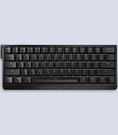
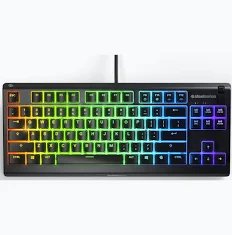

Klawiatura komputerowa to podstawowe urządzenie wejściowe, które służy do ręcznego wprowadzania znaków tekstowych, liczb, symboli oraz do sterowania pracą komputera za pomocą skrótów klawiszowych i poleceń.
Współczesne klawiatury dzielą się między innymi na membranowe i mechaniczne. Różnią się budową, sposobem rejestrowania naciśnięć, głośnością oraz odczuciami podczas pisania.


Jednym z najważniejszych podziałów klawiatur jest sposób działania mechanizmu znajdującego się pod klawiszami. Najpopularniejsze rozwiązania to konstrukcje membranowe oraz mechaniczne.
Pod klawiszami znajduje się elastyczna membrana, która po naciśnięciu styka odpowiednie warstwy przewodzące i przekazuje informację o wciśnięciu klawisza.
Każdy klawisz posiada osobny przełącznik mechaniczny. Po jego naciśnięciu mechanizm rejestruje wciśnięcie i wysyła sygnał do komputera.
Nie. Wszystko zależy od zastosowania i preferencji użytkownika. Klawiatura membranowa może być lepszym wyborem do cichej pracy biurowej, natomiast mechaniczna daje większe możliwości personalizacji i często zapewnia wyraźniejszą informację zwrotną podczas pisania.
Przełączniki, nazywane również switchami, odpowiadają za sposób działania klawisza. Różnią się siłą potrzebną do naciśnięcia, głośnością oraz wyczuwalnym momentem aktywacji. Można wyróżnić trzy podstawowe rodzaje.
Pracują płynnie na całej długości ruchu klawisza. Nie posiadają wyraźnego oporu informującego o momencie aktywacji.
Przykład: Cherry MX Red.
Posiadają wyczuwalny moment oporu podczas naciskania. Użytkownik może łatwiej rozpoznać moment zarejestrowania klawisza.
Przykład: Cherry MX Brown.
Oprócz wyczuwalnego oporu wydają charakterystyczny dźwięk kliknięcia podczas aktywacji.
Przykład: Cherry MX Blue.
Dźwięk może powstawać podczas uderzania elementów przełącznika, powrotu klawisza oraz kontaktu klawisza z obudową. Głośność zależy od rodzaju switchy, konstrukcji klawiatury i zastosowanych materiałów tłumiących.
Różne przełączniki mechaniczne oferują odmienne odczucia podczas użytkowania. Poniższa tabela przedstawia przykładowe modele popularnej serii Cherry MX.
| Model | Rodzaj | Siła aktywacji | Charakterystyka |
|---|---|---|---|
| Cherry MX Red | Linearne | 45 cN | Płynne i lekkie |
| Cherry MX Brown | Dotykowe | 55 cN | Wyraźny opór |
| Cherry MX Blue | Clicky | 60 cN | Głośne kliknięcie |
cN oznacza centyniuton i jest jednostką siły. Wartości dotyczą przykładowych parametrów tych przełączników.
Hot-Swap to rozwiązanie pozwalające wymieniać przełączniki mechaniczne bez lutowania. Dzięki temu można zmienić rodzaj switchy lub zastąpić uszkodzony przełącznik bez konieczności wymiany całej klawiatury.
Klawiatury komputerowe występują w różnych rozmiarach. Mniejsze modele zajmują mniej miejsca na biurku, natomiast większe oferują dodatkowe klawisze i sekcje funkcyjne.
Pełnowymiarowa klawiatura posiada wszystkie podstawowe sekcje, w tym blok numeryczny, klawisze funkcyjne i strzałki.
Klawiatura TKL (Tenkeyless) nie posiada osobnej sekcji numerycznej. Zachowuje jednak klawisze funkcyjne i strzałki.
Bardzo kompaktowa konstrukcja, która usuwa między innymi osobne klawisze funkcyjne, strzałki i blok numeryczny. Część funkcji dostępna jest za pomocą kombinacji klawiszy.
Ich głównym celem jest maksymalne ograniczenie rozmiarów. Funkcje strzałek i innych usuniętych klawiszy są często dostępne poprzez kombinacje z klawiszem Fn.
Układ klawiatury określa rozmieszczenie liter i innych znaków. Różne kraje wykorzystują odmienne układy dostosowane do swoich języków.
Najpopularniejszy układ klawiatury na świecie. Jego nazwa pochodzi od pierwszych sześciu liter znajdujących się w górnym rzędzie literowym.
Układ popularny między innymi w Niemczech i Austrii. W porównaniu z QWERTY zamienia miejscami klawisze Z i Y.
Układ stosowany przede wszystkim we Francji i Belgii. Zmienia rozmieszczenie niektórych liter oraz znaków specjalnych.
W Polsce popularny jest układ polski programisty, oparty na standardzie QWERTY. Polskie znaki, takie jak ą, ę, ś, ć i ł, można wpisywać za pomocą kombinacji klawisza AltGr z odpowiednimi literami.
Klawiatura przewodowa łączy się bezpośrednio z komputerem za pomocą kabla USB. Nie wymaga baterii ani ładowania.
Technologia bezprzewodowa pozwalająca połączyć klawiaturę z komputerem, laptopem, tabletem lub telefonem.
Bezprzewodowa komunikacja wykorzystująca specjalny odbiornik USB. Jest popularna w klawiaturach gamingowych ze względu na niskie opóźnienia.
Nie. Obie technologie korzystają z komunikacji radiowej, ale działają według różnych standardów. Połączenie 2,4 GHz w klawiaturach często wykorzystuje dedykowany odbiornik, natomiast Bluetooth jest standardem umożliwiającym komunikację z wieloma rodzajami urządzeń.
Wiele współczesnych klawiatur posiada podświetlenie, które ułatwia korzystanie z urządzenia przy słabym oświetleniu. Może być jednokolorowe lub wielobarwne.
Wszystkie klawisze są podświetlane jednym kolorem, na przykład białym, czerwonym lub niebieskim.
Umożliwia wyświetlanie wielu kolorów jednocześnie. Użytkownik może wybierać efekty świetlne i dostosowywać wygląd klawiatury za pomocą oprogramowania.
W klasycznym RGB podświetlenie może wyświetlać jeden wybrany kolor w danej strefie. ARGB pozwala sterować kolorami poszczególnych diod niezależnie, dzięki czemu możliwe jest tworzenie bardziej zaawansowanych efektów.
Klawiatury komputerowe wywodzą się z maszyn do pisania oraz urządzeń takich jak dalekopisy. Wczesne komputery wykorzystywały różne sposoby wprowadzania danych, zanim klawiatura stała się powszechnym standardem.
W wielu programach klawisz F1 otwiera pomoc. Pozwala szybko uzyskać informacje o obsłudze aplikacji lub systemu.
Jego rozmiar ułatwia szybkie odnalezienie i naciśnięcie. Służy między innymi do zatwierdzania poleceń, przechodzenia do nowej linii oraz uruchamiania wybranych operacji.
Caps Lock pozwala włączać i wyłączać tryb pisania wielkimi literami. Jest szczególnie przydatny podczas wpisywania tekstów składających się z samych dużych znaków.
Jest to funkcja umożliwiająca jednoczesne rejestrowanie wielu wciśniętych klawiszy. Jest szczególnie przydatna w grach, w których trzeba używać kilku przycisków w tym samym momencie.
To rozwiązanie ograniczające problemy z rejestrowaniem wielu klawiszy jednocześnie. Dzięki niemu klawiatura może poprawnie rozpoznawać kombinacje przycisków.
Keycap to nakładka umieszczona na przełączniku mechanicznym. To właśnie na niej znajdują się litery, cyfry i symbole. W wielu klawiaturach można je wymieniać na inne modele.
Tak. Niektóre zaawansowane modele posiadają małe ekrany, na których można wyświetlać informacje o systemie, aktualną godzinę, animacje lub ustawienia urządzenia.
Jest to klawiatura z niższymi klawiszami i mniejszą wysokością całej konstrukcji. Takie modele często przypominają klawiatury stosowane w laptopach.
Podpórki mają zapewniać wygodniejsze ułożenie dłoni podczas pisania. Mogą być wykonane z plastiku, pianki lub innych materiałów.